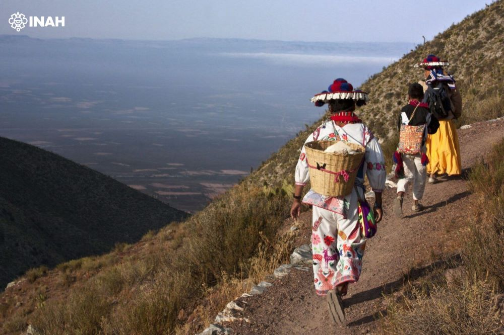

Patrimonio Mundial para evitar la depredación de la emblemática zona
La Organización de las Naciones Unidas para la Educación, la Ciencia y la Cultura (Unesco) ha incluido la Ruta Wixárika por los Sitios Sagrados hasta Wirikuta como parte de la Lista de Patrimonio Mundial, la primera vez que una tradición indígena viva aparece en el listado. Anunciado este sábado, el registro fue aprobado en la 47ª sesión del Comité del Patrimonio Mundial de la Unesco, realizada en París, Francia. Con esta declaración, México suma 36 bienes Patrimonio Mundial. Ahora, se incorpora un paisaje cultural con 20 componentes, identificados junto con autoridades wixaritari (plural de wixárika), que abarcan más de 500 kilómetros entre los estados de Nayarit, Durango, Jalisco, Zacatecas y San Luis Potosí.
La Ruta inicia en la que hoy se conoce como Sierra Huichol, hasta llegar al desierto de Chihuahua, con sitios sagrados adicionales en Nayarit y Durango. Fue reconocida como un ejemplo excepcional y representativo de las rutas ceremoniales y de intercambio ancestrales, que han conectado y enriquecido culturalmente a los pueblos del continente americano durante milenios.
La comunidad wixaritari considera que la inscripción en la Lista de Patrimonio Mundial es una herramienta de sobrevivencia para su cultura, por tratarse de la máxima protección legal que se puede dar a su patrimonio en el derecho internacional, de acuerdo a lo citado por la Secretaría de Cultura de México. “La nominación se trabajó ante los riesgos de las últimas décadas por el aumento poblacional, el crecimiento de proyectos agrícolas e industriales y las concesiones mineras, así como por la disminución del hikuri [peyote], en San Luis Potosí”, ha dicho el representante del Consejo Regional Wixárika, Totupica Candelario Robles, desde París. Tras la declaratoria, el director general del Instituto Nacional de Antropología e Historia (INAH), Diego Prieto Hernández, ha explicado que “se trata de una ruta de peregrinaje ancestral donde los wixaritari practican rituales para refrendar su relación de respeto y reciprocidad con la tierra, propiciar el bienestar del pueblo y asegurar un ciclo agrícola exitoso, para que la milpa dé frutos y el maíz siga dando vida”.